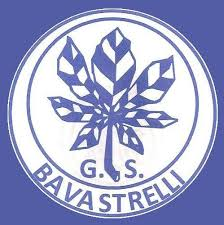

Eventi
Feste, tornei, manifestazioni e appuntamenti organizzati dal gruppo sportivo.

Sport, territorio e comunità
Eventi, sport, iniziative e attività sociali nel cuore di Bavastrelli. Uno spazio dedicato ai soci, agli amici e a tutta la comunità.
Feste, tornei, manifestazioni e appuntamenti organizzati dal gruppo sportivo.
Le date più importanti sempre consultabili in modo semplice e veloce.
Una raccolta fotografica degli eventi e dei momenti più belli.
Informazioni su tesseramento, partecipazione e attività associative.
Statuto, regolamenti, moduli e documenti pubblici dell’associazione.
Come raggiungerci e come rimanere aggiornati sulle nostre attività.